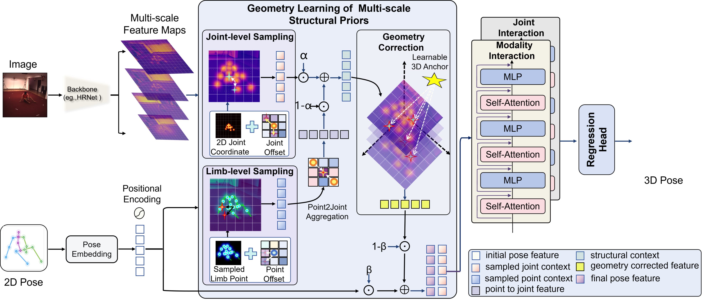
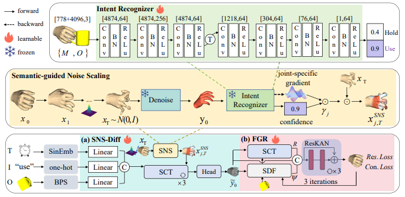
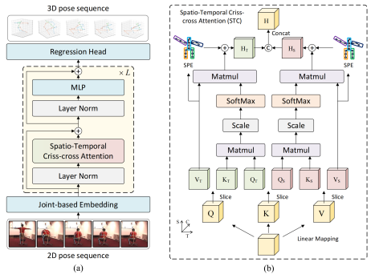
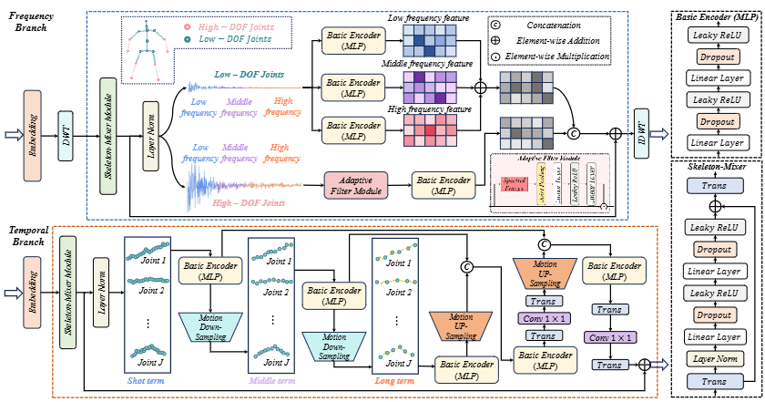
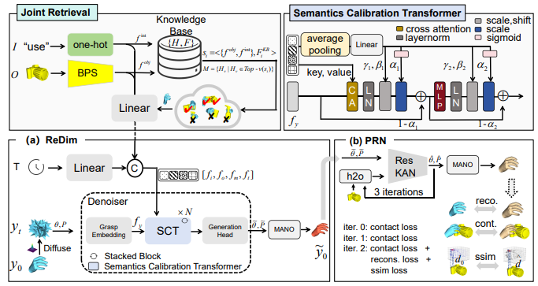

Structured pose & motion
Spatial structure, temporal dependencies, and frequency cues for efficient 3D human pose estimation, hand reconstruction, and motion refinement.
3D VISION / HUMAN MOTION / EMBODIED INTERACTION
Postdoctoral Fellow · University of Macau
Understanding human motion. Building toward embodied interaction.
Macau SAR, China · Working with Prof. Chi-Man Pun
A LITTLE CONTEXT
I am a Postdoctoral Fellow at the University of Macau , working with Prof. Chi-Man Pun . I received my Ph.D. in Computer Science and Technology from Hefei University of Technology , advised by Prof. Richang Hong , and was a visiting joint-training Ph.D. student at Singapore Management University with Prof. Chong-Wah Ngo .
My research connects 3D human motion perception, understanding, and embodied physical interaction . I study structured pose and motion modeling, action quality assessment, multi-person interaction understanding, and dexterous grasp generation.
Publication totals as reported in my October 2026 CV.
SELECTED WORK
From structured perception to physical interaction.



Spatial structure, temporal dependencies, and frequency cues for efficient 3D human pose estimation, hand reconstruction, and motion refinement.
Training-trajectory-based collaborative decoding for action quality assessment, and VLM-based instance-level reasoning for multi-person interaction.
Task semantics, object geometry, and contact constraints for grasp generation, with kinematic temporal cues for pressure estimation.
RESEARCH OUTPUT
Selected published and accepted work. Full author lists are shown where available.


No publications in this category for the selected year.
THE JOURNEY
RESEARCH IN PRACTICE
Macau Science and Technology Development Fund (FDCT). Principal investigator: Prof. Chi-Man Pun, University of Macau.
Core project member. Responsible for day-to-day research progress and core algorithm development, with a focus on reliable recognition of interactions in complex multi-person scenes.
Teaching assistant , Frontiers in Artificial Intelligence, Hefei University of Technology (2021–2022).
Assisted student supervision since 2025: two Ph.D. students at the University of Macau, and two master's students and two undergraduates at Hefei University of Technology.
COMMUNITY
RECOGNITION
BEYOND THE LAB
A few glimpses of life along the way.
See where visitors come from.
Loading visitor map & statistics…
Approximate visitor locations
Powered by MapMyVisitors